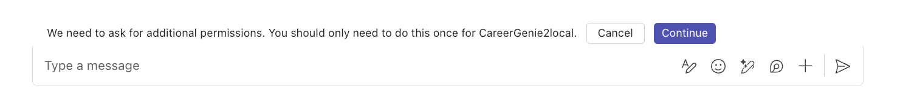

ラボ BTA5 - 複雑なタスクを処理するアクションの追加
このラボでは次のことを行います。
- アクションとは何かを学び、それを使って複雑なタスクを処理する方法を理解します
- カスタム エンジン エージェントにマルチプロンプトを統合し、アクションを扱えるようにします
- カスタム エンジン エージェントにアクションを実装します
- Microsoft Graph とアクションを組み合わせてワークフローを自動化します
Azure OpenAI と Teams AI library を使用してカスタム AI モデルとオーケストレーションを備えた Custom エンジン エージェントを構築したい場合は、これらの ラボ を実施してください
はじめに
さあ、Career Genie にアクションを追加して複雑なタスクやワークフローを処理できるようにしましょう！このラボでは、候補者のリストを扱える新しいプロンプトを Career Genie のロジックに統合します。つまり Career Genie で候補者を検索するときに、候補者のリストを作成し名前を追加できるようになります。作成後は、そのリストを HR に送って面接日程を調整することも可能です。これらすべてを Career Genie に実装するアクションで処理します。それでは始めましょう。
カスタム エンジン エージェントにおけるアクションとは？
AI システムにおけるアクションは、コードでいうところの基本的な関数やメソッドのようなものです。ユーザーの入力に基づいて実行される特定のタスクを指し、AI がさまざまな処理を行う際の構成要素となります。どのアクションを実行するかは、ユーザーの要望によって AI システムが判断します。
例として、以下のようなアクションがあります。
- 新しいリストを作成する
- リストを削除する
- 既存のリストに項目を追加する
- 既存のリストから項目を削除する
ユーザーが AI システムに対話すると、システムはプロンプトを解釈し適切なアクションを選択して実行します。まるでツールボックスに入ったツールの中から、ユーザーのニーズに応じて最適なツールを選ぶようなイメージです。
Exercise 1: アクション付きの新しいプロンプトの作成
この演習では、「prompts」フォルダーにアクションを処理する新しいプロンプトを作成します。
Step 1: 「monologue」プロンプトを作成する
プロジェクトで src/prompts/ に移動し、monologue という名前の新しいフォルダーを追加します。src/prompts/monologue/ フォルダーに config.json という名前のファイルを作成し、次のコード スニペットをコピーしてください。
{
"schema": 1.1,
"description": "A bot that can chat with users",
"type": "completion",
"completion": {
"completion_type": "chat",
"include_history": true,
"include_input": true,
"max_input_tokens": 2800,
"max_tokens": 1000,
"temperature": 0.9,
"top_p": 0.0,
"presence_penalty": 0.6,
"frequency_penalty": 0.0
},
"augmentation": {
"augmentation_type": "monologue"
}
}
config.json の augmentation についての簡単な説明
Augmentation はプロンプト エンジニアリングを簡略化する機能で、特定の指示を自動的にプロンプトへ追加します。augmentation を利用すると、AI にマルチステップ タスク（sequence）を処理させるか、ステップごとに考えさせる（monologue）かを設定できます。
src/prompts/monologue/ フォルダーに skprompt.txt というファイルを作成し、次のテキストをコピーしてください。
You are a career specialist named "Career Genie" that helps Human Resources team who can manage lists of Candidates.
You are friendly and professional. You like using emojis where appropriate.
Always share the lists in bullet points.
rules:
- only create lists the user has explicitly asked to create.
- only add Candidates to a list that the user has asked to have added.
- if multiple lists are being manipulated, call a separate action for each list.
- if Candidates are being added and removed from a list, call a separate action for each operation.
- if user asks for a summary, share all the lists and candidates.
- only send an email to HR if user has explicitly asked to send.
Current lists:
{{$conversation.lists}}
同じフォルダーに actions.json というファイルを作成し、次のコード スニペットをコピーします。
[
{
"name": "createList",
"description": "Creates a new list with an optional set of initial Candidates",
"parameters": {
"type": "object",
"properties": {
"list": {
"type": "string",
"description": "The name of the list to create"
},
"Candidates": {
"type": "array",
"description": "The Candidates to add to the list",
"Candidates": {
"type": "string"
}
}
},
"required": [
"list"
]
}
},
{
"name": "deleteList",
"description": "Deletes a list",
"parameters": {
"type": "object",
"properties": {
"list": {
"type": "string",
"description": "The name of the list to delete"
}
},
"required": [
"list"
]
}
},
{
"name": "addCandidates",
"description": "Adds one or more Candidates to a list",
"parameters": {
"type": "object",
"properties": {
"list": {
"type": "string",
"description": "The name of the list to add the item to"
},
"Candidates": {
"type": "array",
"description": "The Candidates to add to the list",
"Candidates": {
"type": "string"
}
}
},
"required": [
"list",
"Candidates"
]
}
},
{
"name": "removeCandidates",
"description": "Removes one or more Candidates from a list",
"parameters": {
"type": "object",
"properties": {
"list": {
"type": "string",
"description": "The name of the list to remove the item from"
},
"Candidates": {
"type": "array",
"description": "The Candidates to remove from the list",
"Candidates": {
"type": "string"
}
}
},
"required": [
"list",
"Candidates"
]
}
}
]
Exercise 2: プロンプトを選択するロジックをプランナーに実装する
この演習では、ユーザーのプロンプトをチェックして「chat」か「monologue」のどちらかのプロンプトを選択する関数を実装します。
Step 1: プランナーに defaultPrompt 用の関数を作成する
プロジェクトの src/app/app.ts ファイルで、次の関数を追加します。
async function choosePrompt(context){
if (context.activity.text.includes('list')){
const template = await prompts.getPrompt('monologue');
return template;
}
else {
const template = await prompts.getPrompt('chat');
const skprompt = fs.readFileSync(path.join(__dirname, '..', 'prompts', 'chat', 'skprompt.txt'));
const dataSources = (template.config.completion as any)['data_sources'];
dataSources.forEach((dataSource: any) => {
if (dataSource.type === 'azure_search') {
dataSource.parameters.authentication.key = config.azureSearchKey;
dataSource.parameters.endpoint = config.azureSearchEndpoint;
dataSource.parameters.indexName = config.indexName;
dataSource.parameters.embedding_dependency.deployment_name =
config.azureOpenAIEmbeddingDeploymentName;
dataSource.parameters.role_information = `${skprompt.toString('utf-8')}`;
}
});
return template;
}
}
choosePrompt 関数を確認
choosePrompt 関数はユーザー プロンプトに「list」が含まれているかどうかをチェックします。含まれていれば monologue プロンプトを返し、含まれていなければデフォルト プロンプトである chat を返します。
src/app/app.ts ファイルで planner を探し、defaultPrompt に割り当てられているコードを削除します。その後、choosePrompt 関数を defaultPrompt として定義します。最終的なプランナーは次のようになります。
const planner = new ActionPlanner({
model,
prompts,
defaultPrompt: choosePrompt,
});
Exercise 3: アプリにアクションを実装する
この演習では、アクション用の関数を作成し、アプリにアクション ハンドラーを登録します。
Step 1: ConversationState を更新し、各アクションの関数を定義する
src/app/app.ts で @microsoft/teams-ai のインポートを DefaultConversationState に更新します。最終的なインポートは次のとおりです。
import { AuthError, ActionPlanner, OpenAIModel, PromptManager, AI, PredictedSayCommand, Application, TurnState, DefaultConversationState } from "@microsoft/teams-ai";
src/app/app.ts で ConversationState と ApplicationTurnState を探し、次のコードに置き換えます。
// Strongly type the applications turn state
interface ConversationState extends DefaultConversationState {
lists: Record<string, string[]>;
}
export type ApplicationTurnState = TurnState<ConversationState>;
src/app/ フォルダーに actions.ts というファイルを作成し、次のソースコードを追加してアクション用の関数を定義します。
import { ApplicationTurnState } from './app';
function getCandidates(state: ApplicationTurnState, list: string): string[] {
ensureListExists(state, list);
return state.conversation.lists[list];
}
function setCandidates(state: ApplicationTurnState, list: string, Candidates: string[]): void {
ensureListExists(state, list);
state.conversation.lists[list] = Candidates ?? [];
}
function ensureListExists(state: ApplicationTurnState, listName: string): void {
if (typeof state.conversation.lists != 'object') {
state.conversation.lists = {};
}
if (!Object.prototype.hasOwnProperty.call(state.conversation.lists, listName)) {
state.conversation.lists[listName] = [];
}
}
function deleteList(state: ApplicationTurnState, listName: string): void {
if (
typeof state.conversation.lists == 'object' &&
Object.prototype.hasOwnProperty.call(state.conversation.lists, listName)
) {
delete state.conversation.lists[listName];
}
}
export { getCandidates, setCandidates, ensureListExists, deleteList };
Step 2: アクション ハンドラーをアプリに登録する
src/app/app.ts にアクションのインポートを追加します。
import { ensureListExists, getCandidates, setCandidates, deleteList } from "./actions";
次に、AI システムにアクション ハンドラーを登録するために以下のコード スニペットを追加します。
// Register action handlers
interface ListOnly {
list: string;
}
interface ListAndCandidates extends ListOnly {
Candidates?: string[];
}
app.ai.action('createList', async (context: TurnContext, state: ApplicationTurnState, parameters: ListAndCandidates) => {
ensureListExists(state, parameters.list);
if (Array.isArray(parameters.Candidates) && parameters.Candidates.length > 0) {
await app.ai.doAction(context, state, 'addCandidates', parameters);
return `List created and Candidates added. Summarize your action.`;
} else {
return `List created. Summarize your action.`;
}
});
app.ai.action('deleteList', async (context: TurnContext, state: ApplicationTurnState, parameters: ListOnly) => {
deleteList(state, parameters.list);
return `list deleted. Summarize your action.`;
});
app.ai.action('addCandidates', async (context: TurnContext, state: ApplicationTurnState, parameters: ListAndCandidates) => {
const Candidates = getCandidates(state, parameters.list);
Candidates.push(...(parameters.Candidates ?? []));
setCandidates(state, parameters.list, Candidates);
return `Candidates added. Summarize your action.`;
});
app.ai.action('removeCandidates', async (context: TurnContext, state: ApplicationTurnState, parameters: ListAndCandidates) => {
const Candidates = getCandidates(state, parameters.list);
(parameters.Candidates ?? []).forEach((candidate: string) => {
const index = Candidates.indexOf(candidate);
if (index >= 0) {
Candidates.splice(index, 1);
}
});
setCandidates(state, parameters.list, Candidates);
return `Candidates removed. Summarize your action.`;
});
Step 3: 新しいアクションでアプリをテストする
Visual Studio Code の Run and Debug タブで Debug in Teams (Edge) または Debug in Teams (Chrome) を選択してデバッグを開始しましょう。ブラウザーで Microsoft Teams が開きます。アプリの詳細が表示されたら Add を選択し、チャットを開始します。
この演習をローカルでテストする際のヒント
これまでに実装した Teams AI ライブラリの機能の一部は Teams App Test Tool では正常に動作しない場合があります。必ずローカルの Teams でテストおよびデバッグを行ってください。
フローを理解するため、以下の順番で質問してみましょう。
- Hello
- Can you suggest candidates who have experience in .NET?
- Great, add Isaac Talbot in the .NET Developer Candidates list
- Add Anthony Ivanov in the same list with Isaac
- Can you summarize my lists
- Suggest candidates who have experience in Python and are able to speak Spanish
- Nice! Add Sara Folgueroles in the Python Developer Candidates (Spanish speaking) list
- Can you suggest candidates who have 10+ years of experience
- Ok, remove Anthony from the .NET Developer Candidates list
- Add Anthony Ivanov in the Talent list
- Summarize my lists

Exercise 4: Microsoft Graph とアクションを組み合わせてワークフローを自動化する
この演習では、Microsoft Graph を利用して候補者リストを HR に送信し、面接をスケジュールする新しいアクションを実装します。
Step 1: メール送信用の新しいアクションをプロンプトに定義する
src/prompts/monologue/actions.json に次のアクションを追加します。
,
{
"name": "sendLists",
"description": "Send list of Candidates to Human Resources, aka HR for scheduling interviews",
"parameters": {
"type": "object",
"properties": {
"list": {
"type": "string",
"description": "The name of the list to send Human Resources, aka HR for scheduling interviews"
},
"Candidates": {
"type": "array",
"description": "The Candidates in the list to send Human Resources, aka HR for scheduling interviews",
"Candidates": {
"type": "string"
}
}
},
"required": [
"list",
"Candidates"
]
}
}
Step 2: 新しい sendLists アクション用の関数を作成する
src/app/app.ts で getUserDisplayName を探し、関数の前に export を追加します。最終的な関数は以下のようになります。
export async function getUserDisplayName {
...
...
...
}
src/app/app.ts 内の app を探し、スコープに 'Mail.Send' を追加します。最終的な app は次のとおりです。
const app = new Application({
storage,
authentication: {settings: {
graph: {
scopes: ['User.Read', 'Mail.Send'],
...
...
}
}}});
env/.env.local.user に HR のメール アドレスを環境変数として追加します。
HR_EMAIL=<YOUR-EMAIL-ADDRESS>
HR_EMAIL の詳細 (ラボ用)
このラボをテストするために、ご自身のアカウントのメール アドレスを HR_EMAIL に入力してください。実際のシナリオでは、面接日程を送信する HR チームのメール アドレスを使用します。本ラボはプロトタイピング目的であり、本番環境での使用を想定していません。
teamsapp.local.yml を開き、file/createOrUpdateEnvironmentFile の envs リストに次の行を追加します。
HR_EMAIL: ${{HR_EMAIL}}
src/config.ts を開き、次の行を追加します。
HR_EMAIL: process.env.HR_EMAIL
src/app/actions.ts のインポートを以下のように更新します。
import { getUserDisplayName, ApplicationTurnState } from './app';
import { Client } from "@microsoft/microsoft-graph-client";
import config from '../config';
続いて、actions.ts に次の関数を追加します。
async function sendLists(state: ApplicationTurnState, token): Promise<string> {
const email = await createEmailContent(state.conversation.lists, token);
try {
const client = Client.init({
authProvider: (done) => {
done(null, token);
}
});
const sendEmail = await client.api('/me/sendMail').post(JSON.stringify(email));
if (sendEmail.ok) {
return email.message.body.content;
}
else {
console.log(`Error ${sendEmail.status} calling Graph in sendToHR: ${sendEmail.statusText}`);
return 'Error sending email';
}
} catch (error) {
console.error('Error in sendLists:', error);
throw error;
}
}
async function createEmailContent(lists, token) {
let emailContent = '';
for (const listName in lists) {
if (lists.hasOwnProperty(listName)) {
emailContent += `${listName}:\n`;
lists[listName].forEach(candidate => {
emailContent += ` • ${candidate}\n`;
});
emailContent += '\n'; // Add an extra line between different lists
}
}
const profileName = await getUserDisplayName(token);
const email ={
"message": {
"subject": "Request to Schedule Interviews with Shortlisted Candidates",
"body": {
"contentType": "Text",
"content": `Hello HR Team, \nI hope this email finds you well. \n\nCould you please assist in scheduling 1:1 interviews with the following shortlisted candidates? \n\n${emailContent} Please arrange suitable times and send out the calendar invites accordingly. \n\n Best Regards, \n ${profileName}`
},
"toRecipients": [
{
"emailAddress": {
"address": `${config.HR_EMAIL}`
}
}
]
},
"saveToSentCandidates": "true"
};
return await email;
}
最後に src/app/actions.ts で sendLists をエクスポートに追加します。最終的なエクスポートは以下のとおりです。
export { getCandidates, setCandidates, ensureListExists, deleteList, sendLists };
Step 3: sendLists アクション ハンドラーを登録する
src/app/app.ts で ./actions のインポートを sendLists を含むように更新します。最終的なインポートは以下のようになります。
import { ensureListExists, getCandidates, setCandidates, deleteList, sendLists } from "./actions";
次に、AI システムに sendLists アクションを登録するコード スニペットを追加します。
app.ai.action('sendLists', async (context: TurnContext, state: ApplicationTurnState, parameters: ListAndCandidates) => {
await sendLists(state, state.temp.authTokens['graph']);
return `Email sent to HR. Summarize your action.`;
});
Step 4: Entra ID アプリ登録を更新する
新しいスコープ Mail.Send に対応するよう Entra ID アプリのスクリプトを更新します。aad.manifest.json の requiredResourceAccess ノード内で "resourceAppId": "Microsoft Graph", を探し、resourceAccess 配列に次のスコープをカンマの後に追加します。
{
"id": "Mail.Send",
"type": "Scope"
}
Step 5: アプリと新しい sendLists アクションをテストする
Visual Studio Code の Run and Debug タブで Debug in Teams (Edge) または Debug in Teams (Chrome) を選択してデバッグを開始します。ブラウザーで Microsoft Teams が開きます。アプリの詳細が表示されたら Add を選択し、チャットを開始します。
この演習をローカルでテストする際のヒント
これまでに実装した Teams AI ライブラリの機能の一部は Teams App Test Tool では正常に動作しない場合があります。必ずローカルの Teams でテストおよびデバッグを行ってください。
Career Genie と会話を始めるには、たとえば「Hi」と打ち込んでください。
ブラウザーのポップアップ設定を確認
以下の手順をスムーズに行うため、ブラウザーでポップアップがブロックされていないことを確認してください。
追加の権限を求める小さなダイアログ ボックスが表示され、「Cancel」と「Continue」のボタンがあります。これはログインおよび必要な権限への同意を求めるものです。Continue を選択してください。

Developer Tunnels でローカル実行しているため警告画面が表示されますが、Continue を選択します。アプリをデプロイするとユーザーには表示されません。ログインしてアプリの権限に同意する画面にリダイレクトされます。
組織全体の同意について
Microsoft 365 管理者の場合、「Consent on behalf of your organization」を選択してテナント内のすべてのユーザーの同意を行うこともできます。
Accept を選択して権限に同意します。
Career Genie からログイン名を含むメッセージが届き、認証が成功したことを示します。これで Career Genie の新しいアクションをテストできます！
フローを理解するため、以下の順番で質問してみましょう。
- Hello
- Can you suggest candidates who have experience in .NET?
- Great, add Isaac Talbot in the .NET Developer Candidates list
- Add Anthony Ivanov in the same list with Isaac
- Can you summarize my lists
- Suggest candidates who have experience in Python and are able to speak Spanish
- Nice! Add Sara Folgueroles in the Python Developer Candidates (Spanish speaking) list
- Can you suggest candidates who have 10+ years of experience
- Ok, remove Anthony from the .NET Developer Candidates list
- Add Anthony Ivanov in the Talent list
- Summarize my lists
- Add Pedro Armijo in the same list with Sara
- Summarize my lists
- Send my lists to HR
メールボックスを確認
最後のステップの後、候補者リストのメールが届いていることを確認してください。

おめでとうございます！
BTA5 - 複雑なタスクを処理するアクションの追加 を完了しました！さらに探求したい場合は、このラボのソース コードが Copilot Developer Camp リポジトリ で公開されています。
これで Build your own agent パスは終了です！Career Genie の構築は楽しめましたか？ぜひご感想やフィードバックをお聞かせください。💜